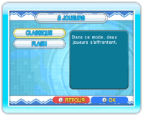

14 |
Parties 1 joueur/parties 2 joueurs (Dr. Mario) |
 |
● 1 joueur C’est un mode un joueur. Au menu principal de Dr. Mario, sélectionnez 1 JOUEUR pour afficher l’écran de choix du mode 1 joueur. Choisissez le type de jeu (CLASSIQUE, VS ORDI ou FLASH), puis définissez vos paramètres. Vous pouvez régler le NIVEAU VIRUS (nombre de virus au départ), la VITESSE (vitesse à laquelle les gélules tombent) et la MUSIQUE. Une fois vos choix terminés, le jeu commence. NOTE: en mode VS ORDI et en mode Flash, vous pouvez définir les paramètres pour l’adversaire contrôlé par l’ordinateur aussi. 
● 2 joueurs C’est un mode 2 joueurs. Au menu principal de Dr. Mario, sélectionnez 2 JOUEURS pour afficher l’écran de choix du mode 2 joueurs. Choisissez entre CLASSIQUE et FLASH, puis définissez les paramètres des joueurs. Vous pouvez également changer de Mii en appuyant sur A la fin de la partie, l’écran des résultats s’affiche. Le joueur 1 peut ensuite REESSAYER ou QUITTER. NOTE: pour faire une partie deux joueurs, une deuxième manette doit être connectée à la console Wii. |

 |
 |
 |